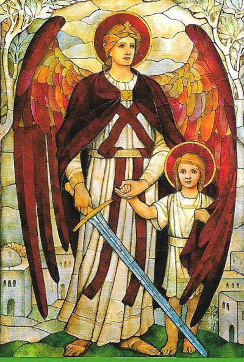
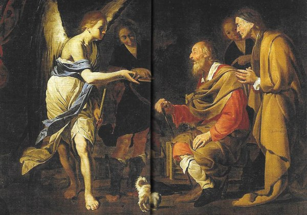
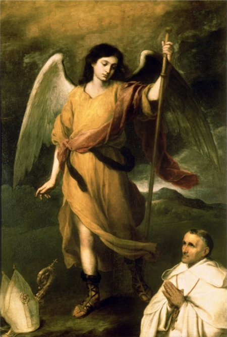
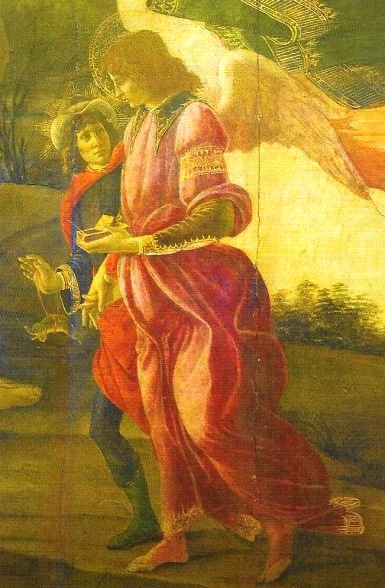

AQUELE QUE
NOS CURA
PROTETOR DO SANTO MATRIMÔNIO

Por outro lado, o matrimônio de Sara e Tobias é um atestado perfeito da intervenção Divina na escolha dos casais, objetivando a constituição de famílias equilibradas, com um projeto de vida alicerçado fundamentalmente no amor mútuo honesto e fiel, que deve ser exercitado pelo casal, e dilatado pela encomenda e criação dos filhos, frutos incomparáveis e maravilhosos que perpetuam a família, e revelam o respeito, o amor e o desejo do casal, de colaborar no plano Divino.
Então se torna evidente que nos casamentos existe um plano de DEUS desde toda a eternidade. O noivado é o tempo de verificação e da graça, para descobrir se cada um dos dois está realmente integrado no chamado ao casamento por toda a vida. Significa dizer, que o Casamento no plano de DEUS, não é um assunto privado, ou seja, reservado especialmente para algumas pessoas, é antes de tudo, e com toda realidade, o resultado de uma escolha Divina, e não simplesmente de uma escolha pessoal, feita pelo homem ou pela mulher. Muita gente não acredita nesta realidade! Entretanto, o Casamento é desejado por DEUS para atender os propósitos Divinos, e por isso mesmo, transcende a alegria e a satisfação dos recém-casados, seja ele de qualquer classe social, assim como de qualquer nacionalidade. Assim, deve permanecer bem visível, que não foi Tobias quem primeiro escolheu Sara, não foi à vontade dele, mas, sem qualquer dúvida, foi à suprema Vontade de DEUS quem fez a escolha.
Por outro lado, torna-se evidente, que para qualquer iniciativa importante na vida, cada pessoa deve reconhecer a necessidade de contar com o auxilio Divino, no sentido de ser afastada de uma vez, a interferência do maligno, e de então, as pessoas que tem fé, poderem com tranquilidade receber a inspiração da Luz de DEUS, que indicará o caminho certo a ser seguido. Por isso também, os Santos intercessores são muito importantes na existência da humanidade, porque eles estando junto de DEUS, ao receberem as súplicas das pessoas através das orações, as conduzirão e as colocarão com toda a santidade que os conduziram ao Paraíso Divino, nas Mãos de NOSSO SENHOR, que por certo, oferecerá sempre as melhores soluções para as dificuldades e problemas de cada pessoa.
Na história de Tobias e Sara, o Arcanjo São Rafael foi enviado por DEUS para solucionar aqueles sérios problemas que acabamos de conhecer. Então o SENHOR deixa absolutamente claro ao nosso conhecimento, que ao mandar o Arcanjo para aquelas missões, inclusive para o Casamento de Tobias, ELE confirma o eficaz poder de intercessão de São Rafael, estando o Arcanjo em perfeitas condições de receber os pedidos de ajuda dos jovens casais, e inclusive dos esposos cristãos que possuem algum tipo de necessidade, para ajudá-los, intercedendo em benefício deles, junto ao SENHOR DEUS. Assim sendo, é bom que os jovens que reconhecem o casamento como uma vocação da vida, não se esqueçam de implorar a ajuda do Arcanjo São Rafael para conseguir um noivo ou uma noiva, como companhia segura e fiel, para todos os embates do cotidiano, os bons e os maus, ao longo do difícil caminho da vida.
Rafael protege aqueles que se amam e aqueles que são chamados a amar um ao outro. Ele restabelece a comunhão perturbada entre um homem e uma mulher, curando o seu amor. Sempre expulsa os demônios, e principalmente nas ocasiões em que o maligno procura destruir o amor do casal. Ele purifica a atmosfera na vida do casal e lhes dá a capacidade de aceitar um ao outro para sempre. Por isso, Tobias amou Sara com tanta dedicação, a ponto de não ser mais capaz de desviar o seu coração, do coração dela, realçando o desejo de juntos compartilharem o destino, através de todos os acontecimentos da existência.
VENCEDOR DO DIABO ASMODEU
O demônio Asmodeu, cujo nome em hebraico significa "quem morre, quem destrói", é considerado como um inimigo numero um do casamento, uma vez que foi ele quem matou os sete maridos de Sara.
São Rafael, "Aquele que nos Cura" é enviado por DEUS para vencer o diabo Asmodeu, o demônio da luxúria, e libertar Sara do feitiço de satanás. Ele é o "demônio mau", inimigo da união conjugal, o impuro, é totalmente contra o casamento. Diante de Asmodeu, que também é o demônio da perversão sexual, da prostituição da alma e do corpo, Rafael se ergue como o “Arcanjo da Pureza e do Amor Santo”. Asmodeu é um demônio terrível, porque mistura o ato da morte ao da procriação da vida, além de perverter o amor, a sexualidade harmoniosa, impondo a sexualidade fragmentada e brutal.
O Arcanjo São Rafael purifica e cura as pessoas para seguir uma vida santa. Foi utilizando a fumaça da incineração do coração e do fígado do peixe, que o Arcanjo Rafael, fez uma espécie de sacramental e expulsou o terrível Asmodeu, demônio vil e cruel que assombrava Sara relegando-a viver na solidão de um deserto no Egito.
No judaísmo antigo o coração significava o pensamento humano, o fígado é a sede dos afetos, e do amor. Portanto aquele que se consagra a DEUS (pela queima de carvão como se oferece incenso ou simplesmente através das orações permanentes, sinceras e fervorosas) se colocando a si próprio sob a proteção divina, consegue afastar o diabo da sua vida.
Ao usar o fel como uma droga para curar a cegueira de Tobit, Rafael mostra que o sofrimento da vida é necessário e indispensável às pessoas, a fim de que chegue à justa visão sobrenatural da vida eterna. O SENHOR JESUS não retirou o seu braço do madeiro e nunca desceu da Cruz, da mesma forma que jamais afastou o seu Corpo da flagelação.
Na história que acabamos de ler, sabemos da derrota final do diabo e da vitória de Tobias. A fuga do diabo é para ser lida como a derrota de uma sexualidade vivida apenas como objeto, de uma sexualidade deformada, instigada essencialmente pela tentação diabólica. Asmodeu é o sinal de que o casal não pode ser sustentado apenas no desejo do corpo, no desejo sutil e insistente, insinuando-se mesmo realizá-lo quando não existe amor. Este procedimento não só vulgariza a “sagrada união matrimonial”, como coloca as pessoas na amizade de satanás e na porta do inferno.
O amor manifestado por Tobias antes de conhecer Sara, expressa uma espécie de amor sem paixão, um amor puro, fortemente equilibrado e exorcizado. A este amor admirável, o casal adicionou a infinita grandeza da oração, agradecendo ao SENHOR por tudo, pelo encontro de ambos, pela proteção, pela escolha Divina e pelo imenso amor que inundou a vida do casal, antes de realizarem o complemento matrimonial segundo a Lei Sagrada, numa demonstração de respeito e de sublime amor, num verdadeiro matrimônio cristão, conforme a Vontade do SENHOR DEUS.
MODELO DE ANJO CUSTÓDIO
Somos tão amados por DEUS, que temos
sempre os Anjos ao nosso lado, como o nosso querido e inseparável Anjo da Guarda,
sempre preocupado em nos ajudar a 
Primordialmente para a “nossa salvação eterna”, o Anjo da Guarda se empenha com todos os seus conhecimentos e habilidades, porque sempre ele quer nos ajudar muito mais, além das coisas temporais. Ele nunca se afasta da pessoa que lhe foi confiada. Isto por motivo de que a pessoa pode sofrer tribulações e cair em pecado na sua ausência, muito embora, quando ocorre a queda humana, não significa dizer que o Anjo não estava presente, e que tinha abandonado aquele filho ou filha de DEUS. Não, não é assim. Isto porque, a missão de Custódia Angélica, conforme acredita São Tomás de Aquino, acontece de conformidade com o plano universal da Divina Providência, que não tem a intenção de subtrair a dor do nosso mundo, nem evitar o pecado de ninguém, “se a pessoa quer realmente pecar”.
De acordo com São Bernardo de Claraval, devemos ser gratos ao SENHOR que nos concedeu os Espíritos Celestes para nos proteger, nos instruir e nos guiar ao longo da nossa existência; e por isso mesmo, as pessoas devem viver com responsabilidade e fieis aos seus compromissos no corpo e no espírito, a fim de poderem receber em plenitude o auxilio Divino, através dos Seres Celestes; "O SENHOR deu ordem aos seus Anjos para nos guardar em todos os nossos caminhos" (Sl 90, 11). E complementando esta realidade, o Papa Bento XVI nos lembra numa das suas homilias: "Neste sentido de ajuda, a inspiração Divina recomenda aos seres humanos, que também as pessoas devem sempre se tornar anjos para as outras pessoas, pois os Anjos nos afastam do caminho errado e orienta as pessoas sempre na direção de DEUS”.
O amor de DEUS nos enviou São Rafael que encarnou a bondade e a misericórdia do próprio DEUS e da Sua capacidade de curar. Então é perfeitamente lícito e verdadeiro raciocinarmos: “Se a Divina Providência é uma presença eterna na história da humanidade, o que DEUS fez a Tobias e a sua família, por meio do Arcanjo São Rafael, fará por todos nós, se realmente nos revelarmos dignos filhos de DEUS”.
A TRADIÇÃO CRISTÃ
Antes de definir o culto ao Arcanjo de um modo específico, vamos considerar o que pode ser classificado como "culto" num sentido amplo, isto é, a “devoção” que em muitos aspectos se manifestou para São Rafael desde os primeiros séculos da Igreja.
Marinheiros antigos acreditavam que as tempestades do mar eram provocadas por demônios. São Rafael, na Bíblia, é chamado vencedor do diabo Asmodeu porque ele ganhou, e o isolou no deserto do Baixo Egito.
Desde a Idade Média, era habitual em Florença, na Itália, que os filhos dos comerciantes antes de realizar as suas viagens de negócios, se colocarem sob a proteção de São Rafael. Era de fato utilizada uma tabuleta para expressar este desejo, onde nela estava pintado o Arcanjo, e ao seu lado, ao invés de ser colocada a figura de Tobias, ficava o local em branco, onde era colocada a imagem do viajante, a fim do Santo Arcanjo mantê-lo sob a sua proteção.
Bem como na Toscana, em muitos outros lugares do cristianismo, todo adolescente, que pela primeira vez se afastava de casa para se meter no caminho, confiantemente se colocava sob a proteção do Arcanjo. E por essa razão, o Arcanjo foi “definido" como “Protetor dos Adolescentes”, ou seja, Aquele que ia proteger as virtudes e a integridade dos seus protegidos.
UMA NOTÁVEL INTERVENÇÃO

Apesar da oposição do seu pai que lhe propunha um vantajoso casamento, ela permaneceu firme na decisão de se consagrar a DEUS. Aos 16 anos, obteve o consentimento paterno, e se tornou uma Terciária Franciscana com o nome de “Irmã Maria Francisca das Cinco Chagas”, sob a Regra de São Pedro de Alcântara. Mantendo-se no mundo, ela viveu de modo mais perfeito a Regra da Ordem Religiosa, e ainda sujeitou o seu corpo a outros suplícios, embora já esgotado pelo trabalho contínuo, pelos jejuns, vigílias, flagelação e o cilício. “Maria Francisca teve o privilégio de sofrer no corpo, nas últimas cinco sextas-feiras da Quaresma da sua vida, depois de receber a Sagrada Comunhão, as dores das cinco principais chagas de JESUS”. Padre Salvatore, que a confessou durante 37 anos, por vezes abreviava a sua pena, dizendo: "Por santa obediência desce da cruz e cessa de sofrer." Nos últimos três dias da Semana Santa ela não comia nada. Durante muito tempo, teve uma grande chaga aberta no peito e nos dias da paixão a chaga se abria e era preciso medicar. Quando a ferida estava prestes a se tornar gangrenosa, pela Vontade do SENHOR, o Arcanjo Rafael veio e a curou instantaneamente. Ela foi muito perseguida pelo diabo, que a impelia as blasfêmias (que ela não aceitava) e a forçou a pensar em suicídio, mas a santa era solicita nos sofrimentos, que ela padecia por DEUS, para a sua própria salvação e o bem da Igreja. Quando as perseguições do diabo assumiram formas físicas de extrema violência, o Arcanjo São Miguel veio vigorosamente em seu auxílio e afugentou satanás.
Ao longo dos últimos 14 anos de vida ela contraiu uma santa amizade com o Padre Barnabita São Francisco Saverio Bianchi. O santo percebeu varias vezes durante a celebração da Santa Missa, que a quantidade de vinho que ele colocava no cálice para consagrar, estava sempre pela metade da quantidade. Ele ficava surpreso e passou a verificar o fenômeno, durante as Santas Missas que celebrava.
Quando Maria Francisca permaneceu sem Missa na sua Capelinha e por motivo da enfermidade não podia sair de casa, ia assistir a Santa Missa que o Padre Bianchi celebrava na sua igreja. Certa vez, durante a Santa Missa, antes da Consagração, o Padre viu que havia tão pouco vinho no fundo do Cálice que o deixou perturbado. Isto porque, ele havia colocado uma boa quantidade de vinho no cálice para a Consagração! Na sua cadeira de rodas, próxima ao Altar, Irmã Maria Francisca das Cinco Chagas observando a hesitação do Padre falou: "Meu Padre, se não fosse pelo Arcanjo São Rafael, que me avisou que você tinha que completar o sacrifício da Santa Missa, eu teria bebido tudo. Você não vai se abalar por nenhuma razão, certo?" O Padre Bianchi deu um ligeiro sorriso e em seguida, colocou mais vinho no cálice para a Consagração e junto da sua Hóstia grande, também colocou uma Partícula menor para a sua penitente. Ele compreendeu que tinha acontecido uma carinhosa intervenção do Arcanjo São Rafael em benefício da Irmã Maria Francisca, que gostava muito de vinho.
Esta Santa recebia graças e favores especiais através do Arcanjo São Rafael. Visto que habitualmente ela estava doente, aprouve ao SENHOR colocá-la em custódia permanente de uma maneira toda especial com o Arcanjo São Rafael. No ano de 1789 este Espírito Celeste abençoado lhe apareceu com extraordinária beleza; Santa Francisca ficou tão surpresa que não conseguia mais falar. Então o Arcanjo, repleto de caridade pelos doentes, disse: "Eu sou enviado para curá-la dos seus ferimentos”. Mais tarde, ela teve outras aparições do Arcanjo. Em abril de 1786, a sua doença a fez incapaz de realizar qualquer movimento. Don Giovanni Pessiri, bispo local, trouxe uma xícara de chocolate e a colocou ao lado da sua cama, dizendo-lhe para usá-la, uma vez que os seus deveres pastorais o chamavam em outro lugar. A pobre mulher doente, não sabia o que fazer por causa da convulsão. Mas, imediatamente a taça foi levada à sua boca por uma mão invisível! E a mesma mão retornou a taça vazia de volta, colocando-a no mesmo lugar na mesinha de cabeceira da cama. Maria Francisca, confortada e tranquilizada, deu graças a SANTÍSSIMA TRINDADE e ao seu amigo e protetor Arcanjo São Rafael.
Em outra ocasião, o Padre Francisco
Xavier Bianchi estando em sua companhia sentiu - como ele mesmo descreveu - "Sentiu um maravilhoso perfume do
paraíso".
Ele, então, pedindo 
Todos estes acontecimentos estão relatados na causa de Canonização de Santa Maria Francisca das Cinco Chagas que morreu em Nápoles no dia 16 de Outubro de 1791, e foi canonizado pelo Papa Pio IX em 1867.
Seu culto é ainda muito vivo em Nápoles, e perto da sua casa foi construído um pequeno Santuário de um Instituto de Freiras Terciárias Franciscanas.
Graças a Santa Francisca, o Padre Bianchi, se tornou um fervoroso devoto de São Rafael Arcanjo, e de fato, no processo de canonização da Santa, o Padre Barnabita foi uma das maiores testemunhas. Ele próprio teve uma experiência pessoal de socorro por parte do Arcanjo, que foi também relatada no mencionado processo.
Em Março de 1779, o padre Bianchi, viajou para Milão a fim de participar do Capítulo Geral dos Barnabitas, e visitou a Irmã Maria Francisca para cumprimentá-la. A Santa Monja garantiu-lhe que fez uma oração a DEUS suplicando o sucesso da sua viagem. Terminado o Capítulo da Ordem Religiosa, ao retornar do Norte da Itália de carro, viajando com outras pessoas, inclusive o Geral da sua Ordem, o motorista do veiculo atravessou uma rua pobre e, infelizmente, a habilidade do condutor não foi suficiente para evitar que o carro caísse num poço profundo ao lado da estrada. Ninguém ficou ferido, mas o medo foi grande. E o medo foi seguido de desânimo porque não era possível sair daquele buraco. Aconteceu, todavia, que de repente, viram um jovem a cavalo na margem superior da estrada que sem uma palavra, trazendo na mão uma tocha acesa que iluminava o caminho, se aproximou do poço onde o carro estava. Com seu braço forte segurou a barra de traz do carro com uma mão, mantendo a tocha acesa na outra, e com um rápido impulso puxou o veículo do buraco, e em seguida, aquele cavaleiro caridoso encaminhou os viajantes até uma pousada, e logo se afastou, desaparecendo para espanto de todos sem lhes dizer uma palavra.
Chegando a Nápoles, padre Bianchi foi imediatamente visitar Santa Maria Francisca para lhe contar o episódio acontecido na viagem, mas isso não foi possível, pois ela sem lhe dar tempo de falar, lhe disse: "Eu sei o que aconteceu, ainda estou agradecendo a São Rafael que veio me trazer a notícia, sobre o desagradável acontecimento que você e os outros que viajavam na sua companhia, tiveram que passar".